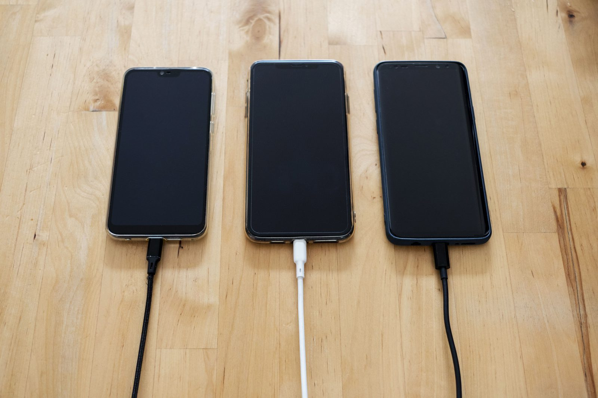

One of my favorite memories at NYU Abu Dhabi is studying for Arabic vocabulary quizzes. Between problem sets I’d run through my flashcards, and it was satisfying because the progress was measurable: 50 words, then 100, then 500. Then I’d have an actual conversation with a native speaker and realize that knowing the words wasn’t the same as knowing what to say. The same phrase changed meaning depending on who said it, who heard it, and how well they knew each other. The vocabulary was information. The story was context.
Technical companies often make the same mistake. They get very good at feature-telling: the product does this, it integrates with that, here are the benchmarks, here are the differentiators. All of it can be true, and none of it tells a story. A feature answers what the product can do. A story answers why anyone should care.
The mechanism and the consequence
Take a phone. The spec sheet says 4,500 milliamp hours. That’s accurate, verifiable, and semantically inert, because a number is a mechanism and not a consequence. What it actually means is that you stop checking the battery before you leave the house. Same phone, same number, except now it belongs to somebody’s day. The product isn’t the protagonist. The customer’s problem is.

It isn’t one story either. Those 4,500 milliamp hours are a full day of navigation to someone in an unfamiliar city, a shift you don’t have to plan around finding an outlet, and one less thing that can go wrong for anyone waiting on a call that matters. The spec didn’t change. The narrative did. Deciding which version to tell, and to whom, is most of the work.
So why do companies lead with the mechanism? Not for lack of imagination. In technical work, precision is how you earn standing, and my own training in the natural sciences taught me to value it above almost everything else. People optimize for what earns them standing, and meaning gets filed as someone else’s job.
Order, not opposition
Saint-Exupéry, who flew mail planes before he wrote, left a line usually translated as:
“If you want to build a ship, do not drum up the men to gather wood, divide the work, and give orders. Instead, teach them to yearn for the vast and endless sea.”
He knew what a badly maintained aircraft does, so this isn’t an argument against rigor. It’s an argument about order. The wood still has to be sound, but nobody gathers it for its own sake.
Where the sea comes from
Which leaves the harder question of where the sea comes from, and it isn’t a desk. It comes from beta programs, where you find out which step people skip. From interviews, where someone walks you through a workaround they’ve stopped noticing they do. From the issue tracker, and from the hallway at a conference. Most of positioning is listening.
Storytelling isn’t about removing the details. It’s about giving the details somewhere to go. Feature-telling tells people what you built. Storytelling gives them a reason to care that you built it.